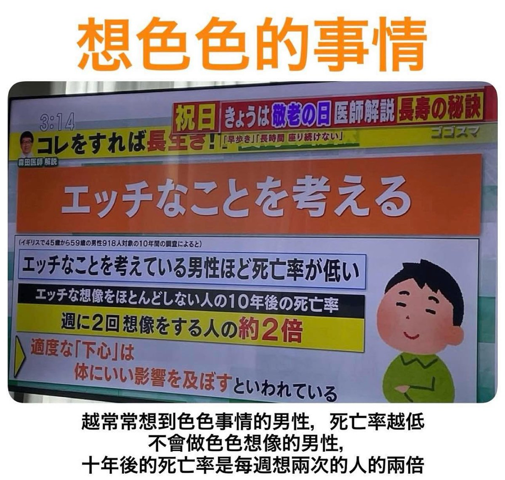

氫氣球
@allnightforlive
@mirotabasco 因為通常憂鬱狀態下的人有些會伴隨性慾下降，而且重病的人基本想色色也不太可能，所以把「不想色色」跟「死亡機率高」畫上等號，要麼是出自於心理層面，要麼就是人家收到病危通知正準備後事你問他現在想不想色色是一樣的道理

Miro一期生塔芭絲可Tabasuko
@mirotabasco
大家都要誠實面對自己... https://t.co/ahggOrFD3R